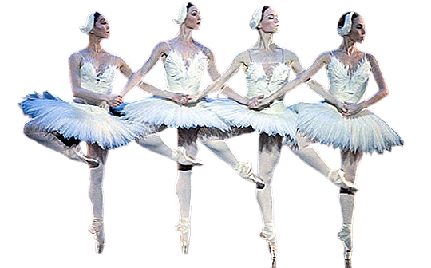

Почнемо наше пропрацювання зі значення - translate. Зміщуємо елемент на 20% вверх ТА вниз (по осі X та Y) від початково положення об'єкта.
Масштабує елементи, роблячи їх більшими або меншими. На 50% зменшую його, тобто transform: scale;
Повертаємо елементи через - transform: rotate ;
Деформуємо або нахиляєм об'єкт через - transform: skew;
За допомогою transform: matrix об'єднуємо кілька 2D функцій.
Через множинну трансформацію робимо ось таку незрозумілу штуку...
Зміщаємо центр трансформацію.
Встановлення глибини та зміна точки початку координат.
Переміщає елемент в 3D просторі.
Визначає, як дочірні елементи мають відображатися у 3D-просторі
Відображення зворотного боку об'єкта.